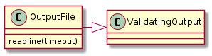
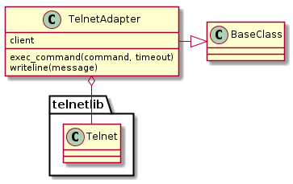
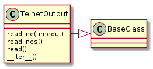
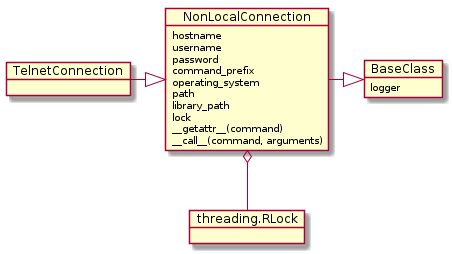
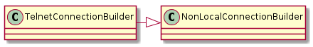

The TelnetConnection takes the command-line command as a property and the arguments to the command as parameters.
For Example:
sc = TelnetConnection(hostname='192.168.10.1', username='bob')
output = sc.ls('-l')
for line in output.output:
print line
Prints the output of the ls -l command line command.
This acts as a file-like object that traps socket timeouts so that users do not have to know that it contains a networked connection. To prevent blocking the socket-timeout causes it to return a SPACE.
Note
This is also defined in the sshconnection module, but since I wanted to allow for the case where SSH is not used it is re-defined here (otherwise you have to install paramiko)
OutputFile(*args, **kwargs) |
A class to handle the ssh output files |

The TelnetAdapter adapts the built-in python telnetlib to make it easier for the TelnetConnection to used
TelnetAdapter(host[, prompt, login, ...]) |
A TelnetAdapter Adapts the telnetlib.Telnet to this libraries interfaces. |

The TelnetOutput adapts the TelnetAdapter output to appear more file-like.
TelnetOutput(client[, prompt, end_of_line, ...]) |
The TelnetOutput converts the telnet output to a file-like object |

TelnetConnection([port, prompt, ...]) |
A TelnetConnection executes commands over a Telnet Connection |

Note
The TelnetConnection should be the main interface for both Telnet Servers and Serial-connections. To convert a serial connection to a Telnet connection see the pyserial tcp-ip serial bridge.
TelnetConnectionBuilder(*args, **kwargs) |
Implements a builder for the TelnetConnection |

TestTelnetConnectionBuilder([methodName]) |
Create an instance of the class that will use the named test method when executed. |